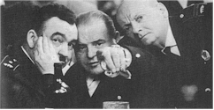
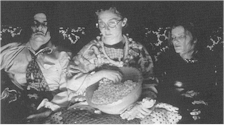

|
22nd Toronto
International |
Contents | Features | Reviews | News | Archives | Store
|
22nd Toronto
International |
"Having fun?" asked Piers Handling during a mad dash for last-minute seats at a typically sold-out public film screening (in this case, Rob Tregenza's bracing American independent feature Inside/Out) halfway through the 22nd annual Toronto International Film Festival, which occupied most of the downtown cinemas and hotel facilities 4 to 13 September.
Handling is the festival's director, and as he skittered around the corner to present Tregenza to the always enthusiastic Toronto public, he missed the obvious response: oh yes, indeed, not only is it possible to have a great deal of fun at this event in this city, but a balanced selection of very good films from around the world chosen by Handling and his programming staff ensured that the time invested in movie-going (anywhere from three to seven features a day for press and industry types, depending on writing assignments, meetings and one's inclination to watch a movie from beginning to end) was time well spent.
 One of the largest and most prominent film events in North America, the 1997
edition of the Toronto festival featured 281 films from 58 countries organized into
thematic programs. The blue ribbon Gala section featured such hotly anticipated high
profile films as Atom Egoyan's The Sweet Hereafter (the opening night selection),
Curtis Hanson's L.A. Confidential, Kasi Lemmons' Eve's Bayou and
Jean-Jacques Annaud's Brad Pitt starrer Seven Years in Tibet (the closing night
event).
One of the largest and most prominent film events in North America, the 1997
edition of the Toronto festival featured 281 films from 58 countries organized into
thematic programs. The blue ribbon Gala section featured such hotly anticipated high
profile films as Atom Egoyan's The Sweet Hereafter (the opening night selection),
Curtis Hanson's L.A. Confidential, Kasi Lemmons' Eve's Bayou and
Jean-Jacques Annaud's Brad Pitt starrer Seven Years in Tibet (the closing night
event).
Special Presentations included Robert Duvall's The Apostle, Antonia Bird's Face, Paul Thomas Anderson's Boogie Nights and new films from Hal Hartley, Spike Lee, Alan Rudolph, Sally Potter, Jim Jarmusch, Michael Moore, David Mamet and others. A relatively new section called Masters highlighted new work from Zhang Yimou (Keep Cool), Manoel de Oliveira (Journey to the End of the World, featuring Marcello Mastroianni in his final performance) and Austrian director Michael Haneke (represented by two features, his adaptation of the Kafka novel The Castle and the harrowing Funny Games).
The Perspective Canada program presented the best and most interesting new films from the country, this year numbering 50 features, shorts and documentaries by such notable natives as Guy Maddin (Twilight of the Ice Nymphs), Mina Shum (Drive, She Said), John Greyson (Uncut) and newcomer Thom Fitzgerald (The Hanging Garden).
By far the largest section of the festival, Contemporary World Cinema offered movies both familiar and new, work culled from previous festivals and premieres, films that have been judged by the programmers to represent the best blends of art and commerce over the previous year.
The Discovery sidebar identified feature debuts from talents to watch, among them Shane Meadows' TwentyFourSeven, Nicholas Barker's Unmade Beds, Carlos Marcovich's Who the Hell is Juliette?, James Herberts' Scars and Jill Sprechers' Clockwatchers.
Although only in it's third year, programmer Cameron Bailey's Planet Africa program unveiled nine features, many with shorts preceding them, that display the works of exciting new filmmakers from Mali, Burkina Faso, Egypt, Senegal, South Africa, Gabon, Tunisia and Jamaica, as well as the United States, the United Kingdom and France.
Documentaries of distinction were organized in their own section, Real to Reel, with films that explored such topics as movie makers and the process of making movies, the transfer of Hong Kong to the People's Republic of China, the life and career of Marcello Mastroianni, Sarajevo, Shanghai and gender issues.
For the third year of Dialogues: Talking with Pictures, prominent filmmakers and stars were invited to select films that have affected them and present them to Toronto audiences. This intriguing concept always yields surprises and 1997 proved no different: Chow Yun-Fat introduced Milos Forman's One Flew Over the Cuckoo's Nest as "one of the most memorable experiences of my lifetime" (Icelandic director Fridrik Thor Fridriksson also selected a Forman film, The Fireman's Ball), John Sayles paid tribute to the "seriously political and deeply humanist" nature of Mario Monicelli's I Compagni (The Organizer), Errol Morris and Guy Maddin rejoiced over Hollywood B movies (Edgar Ulmer's Detour and Tod Browning's The Devil Doll, respectively), and raconteur James Toback paid tribute to the ultimate cinematic con artist, Orson Welles, by introducing and discussing a showing of the mischievous master's F for Fake.
Those interested in the subject could explore the cinema of the Balkans (including Bosnia, Croatia, Macedonia, Bulgaria, Slovenia and the former Yugoslavia) in the "Balkan Cinema: Home Truths" section, which featured 19 films covering the period from Dusan Makavejev's 1971 WR: Mysteries of the Organism to 1997 productions from Bosnia (Ademir Kenovic's The Perfect Circle) and the Republic of Macedonia (Antonio Mitrikeski's Across the Lake).
The Spotlight this year was on reclusive French director Benoit Jacquot, whose six films (none of which have been widely distributed in the United States) reveal an artist of great depth and sensitivity grappling with profoundly intellectual Gallic issues in a cool, often slyly humorous style that is at once sophisticated and accessible.
Finally, moviegoers with a touch of insomnia could avail themselves of a little Midnight Madness, a popular mainstay of the festival that this year included new films from artist-turned filmmaker Cindy Sherman (Office Killer), Hong Kong-based action director Tsui Hark (the animated sequel A Chinese Ghost Story – The Tsui Hark Animation), Kirby Dick (the self-explanatory Sick: The Life and Death of Bob Flanagan, Supermasochist), the prominent independent production house Good Machine (Frank Grow's Love God), the obligatory Japanese entry (Takashi Miike's Fudoh: The New Generation) and popular artist Bill Plympton (I Married a Strange Person).
As at all the larger festivals, the challenge is not only to see as many films as possible, but to balance the time between movies that have commercial distribution lined up (and will thus be available in subsequent months) and those which may not be accessible – the smaller, more obscure or "difficult" films that don't have broad appeal but represent new visions in international filmmaking. To some degree this is a crapshoot, although with a little advance planning and some luck (The Edge will open; the dreamy Hungarian adaptation of the Shirley Jackson short story Long Twilight probably won't) a schedule can be prepared.
Contents | Features | Reviews | News | Archives | Store
Copyright © 1999 by Nitrate Productions, Inc. All Rights Reserved.